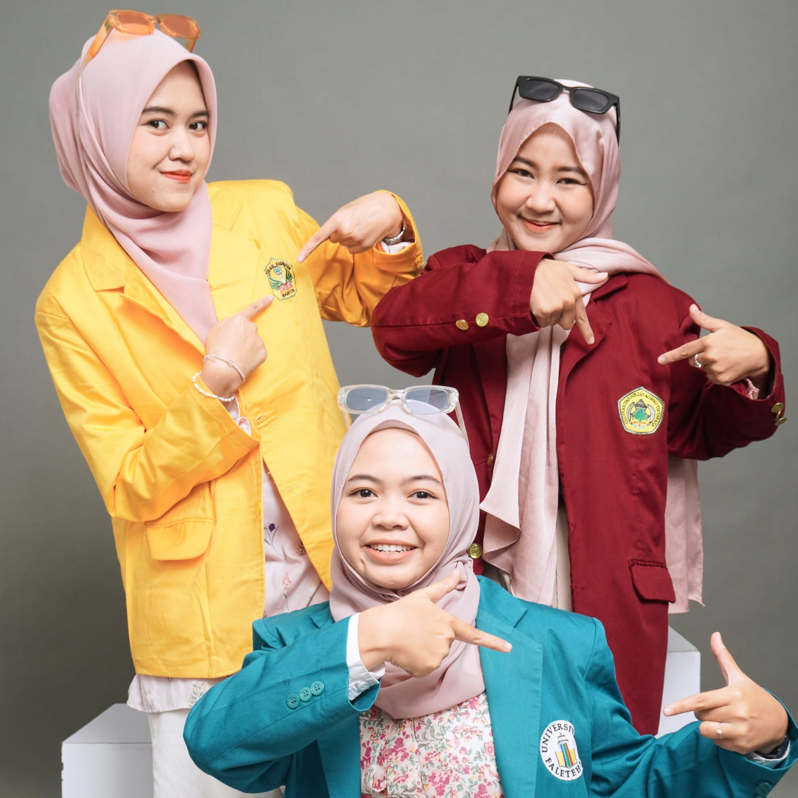

Happy Birthday Dindol!
hari ini umur lo bertambah jadi 21 tahun, i pray a lot for you din.
Makasiiw yaaw sudaa selalu jadi cahaya di hari-hari guee, tempat yang paling nyaman buat cerita dan selalu buat gue ketawa.
din lo itu hadiah terindah dari semesta yang selalu buat hari-hari gue lebih berwarna, yang selalu nemenin gue pas suka dan duka and gue selalu bersykur punya lo di dunia ini.
semoga semua impian lo terwujud, langkah lo ringan, dan hati lo selalu penuh cinta.
jangan lupa betapa berharganya diri lo ya din.
selamat ulang tahun, dindakuu sayang! 💖✨


din jangan benci bulan july ya, walaupun banyak luka yang dateng dibulan ini tapi gue selalu berdoa lebih banyak bahagia buat lo, gue bakal selalu nemenin hari hari lo din, lo gak sendirian sama kaya gue cuma sekarang sorry yaa heheh ldr dulu dan sorry gue gak bisa rayain langsung hari H nya karna lagi kkm tapi nanti ada something dateng ke rumah looow.
gue selaliu berdoa selalu buat lo supaya semua langkah yang lo ambil dimudahkan, semoga goals lo tercapai, semoga lo selalu dilindungi sama Allah, semoga lo sehat terus mental dan fisiknya, semoga lo panjang umur sama gue dan nilam biar bisa nyobain ini itu kesana kesini dan menua bareng gue dan yang paling dalem semoga lo selalu beriringan dengan kebahagiaan ya din,sama gue nilam ataupun yang lain terutama pasangan lo nanti semoga orang beruntung itu (pasangan lo) selalu bersyukur punya lo dan selalu ada buat lo,selalu sayang sama lo kaya gue dan nilam.
inget ya din, lo gak sendirian ngadepin ini semua, gue dan nilam selalu ada disini kapan pun lo butuh jadi jangan sungkan ya,gueee bakal jadi no 1 kalo lo ada apa apa, sorry kalo web ini sederhana banget hehe tapi gue effort buat lo semoga lo seneng dan suka sama karya yang gak seberapa untuk orang mageran kaya gue hahaha.
dindol terus jadi versi terbaik dari diri lo yaa, gue bangga banget sama semua pencapaian lo, lo keren dan hebat udah survive selama ini makasih yaaa. seluruh dunia butuh lebih banyak orang kaya loo.
semoga tahun ini dipenuhi sama petualangan baru yang woww, pelajaran yang berarti, dan cinta yang tidak pernah pudar.
jangan lupa istirahat ya fisik dan mental lo, jangan lupa senyum , and dont forget to love your self sama besar kaya lo mencintai orang lain.
you desserve anything. ✨
dan gue bersyukur banget bisa jadi sahabat looo💕
happy birthday again, dindolll!!
love you to the moon and back 🎂🌙